1. Business Understanding
-
Forecasting Power Output: The primary goal is to accurately predict power output using historical environmental and temporal data. This forecasting is essential for efficient energy management, cost reduction, and optimizing operations within the energy sector.
-
Prediction Approach: Since we aim to predict continuous values of power output, regression techniques are the appropriate modeling approach for this project.
-
Data Scope: The project utilizes data collected over a period of 3 years, providing a substantial historical basis for accurate forecasting.
2. Data Understanding
We begin by importing the necessary libraries and loading the datasets.
Code cell 4
import pandas as pd
import numpy as npLoad the training data (Train.csv), testing data (Test.csv), and the column information (column_info.csv).
Code cell 6
df = pd.read_csv(r"C:\Users\GGPC\Desktop\Work\Personal Projects\Forcast Transactions\data\Train.csv")
df2 = pd.read_csv(r"C:\Users\GGPC\Desktop\Work\Personal Projects\Forcast Transactions\data\Test.csv")
df_col_info = pd.read_csv(r"C:\Users\GGPC\Desktop\Work\Personal Projects\Forcast Transactions\data\column_info.csv")Code cell 7
df_col_info.columns = ['variable', 'description']
df_col_info| variable | description | |
|---|---|---|
| 0 | Time | Readings timestamp |
| 1 | Temp_2m | Temperature at 2 mtrs above surface |
| 2 | RelHum_2m | Relative Humidity at 2 mtrs above surface |
| 3 | DP_2m | Dew Point at 3 mtrs above surface |
| 4 | WS_10m | Wind Speed at 10 mtrs above surface |
| 5 | WS_100m | Wind Speed at 100 mtrs above surface |
| 6 | WD_10m | Wind Direction at 10 mtrs above surface |
| 7 | WD_100m | Wind Direction at 100 mtrs above surface |
| 8 | WG_10m | Wind Gusts at 100 mtrs above surface |
| 9 | Power | Turbine power generation, normalized between 0... |
Code cell 8
df.info()Code cell 9
df.describe()| Unnamed: 0 | Location | Temp_2m | RelHum_2m | DP_2m | WS_10m | WS_100m | WD_10m | WD_100m | WG_10m | Power | |
|---|---|---|---|---|---|---|---|---|---|---|---|
| count | 140160.000000 | 140160.000000 | 140160.000000 | 140160.000000 | 140160.000000 | 140160.000000 | 140160.000000 | 140160.000000 | 140160.000000 | 140160.000000 | 140160.000000 |
| mean | 17519.500000 | 2.500000 | 45.912162 | 70.420512 | 35.867228 | 4.352948 | 6.924278 | 200.684417 | 200.649010 | 8.027673 | 0.312437 |
| std | 10115.212797 | 1.118038 | 21.930554 | 17.000203 | 20.979720 | 2.027149 | 3.056636 | 100.079917 | 101.105919 | 3.626641 | 0.253774 |
| min | 0.000000 | 1.000000 | -31.420400 | 8.664205 | -36.627405 | 0.165389 | 0.007799 | 0.051683 | -0.942685 | 0.436515 | -0.000004 |
| 25% | 8759.750000 | 1.750000 | 29.579600 | 57.664205 | 21.172595 | 2.815389 | 4.747799 | 128.051683 | 127.057315 | 5.236515 | 0.099696 |
| 50% | 17519.500000 | 2.500000 | 45.879600 | 72.664205 | 35.672595 | 4.055389 | 6.717799 | 211.051683 | 211.057315 | 7.636515 | 0.246896 |
| 75% | 26279.250000 | 3.250000 | 64.579600 | 84.664205 | 53.872595 | 5.575389 | 8.847799 | 287.051683 | 289.057315 | 10.236515 | 0.486396 |
| max | 35039.000000 | 4.000000 | 94.479600 | 99.664205 | 78.272595 | 18.695389 | 24.597799 | 359.051683 | 359.057315 | 28.936515 | 0.988796 |
3. Data Preparation
Define a function to transform the Time column into datetime format and extract new features like Month, Year, and TimeOfDay.
Code cell 12
def transform_time(df):
df['Time'] = pd.to_datetime(df['Time'], format='%d-%m-%Y %H:%M')
df['Month'] = df['Time'].dt.month
df['Year'] = df['Time'].dt.year
df['TimeOfDay'] = df['Time'].dt.hour
df.drop(columns='Time', inplace=True)
df.drop(columns='Unnamed: 0', inplace=True)
return df
train_df = transform_time(df)
test_df = transform_time(df2)Preview the transformed datasets.
Code cell 14
print(f'{train_df.head()}\n\n\n{test_df.head()}')Code cell 15
train_df.info()Code cell 16
test_df.info()Verify data quality by checking for null values and duplicates in both datasets.
Code cell 18
print(f'Train data Null:{train_df.isnull().sum().sum()} \nTest data Null:{test_df.isnull().sum().sum()}')Code cell 19
print(f'Train data Duplicates: {train_df.duplicated().sum()} \nTest data Duplicates: {test_df.duplicated().sum()}')Calculate the correlation matrix to identify relationships between variables.
Code cell 21
import seaborn as sns
import matplotlib.pyplot as plt
corr_matrix = train_df.corr()
plt.figure(figsize=(10, 10))
sns.heatmap(corr_matrix, cmap='coolwarm', annot=True)
plt.title('Initial Correlation Matrix')
plt.show()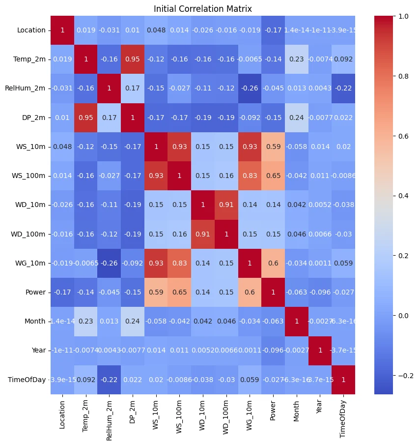
Flatten the correlation matrix and sort to find highly correlated feature pairs.
Code cell 23
corr_df = (corr_matrix.unstack()
.reset_index()
.rename(columns={'level_0': 'variable_1', 'level_1': 'variable_2', 0: 'correlation'})
.query('variable_1 != variable_2')
.sort_values(by='correlation', ascending=False))
print(corr_df.head(10))
Visualize the correlation matrix again after removing the highly correlated feature.
Code cell 25
# Remove the DP_2m column due to high correlation with other features to reduce multicollinearity.
train_df.drop(columns='DP_2m', inplace=True)
plt.figure(figsize=(10, 10))
sns.heatmap(corr_matrix, cmap='coolwarm', annot=True)
plt.title('Correlation Matrix after removing DP_2m')
plt.show()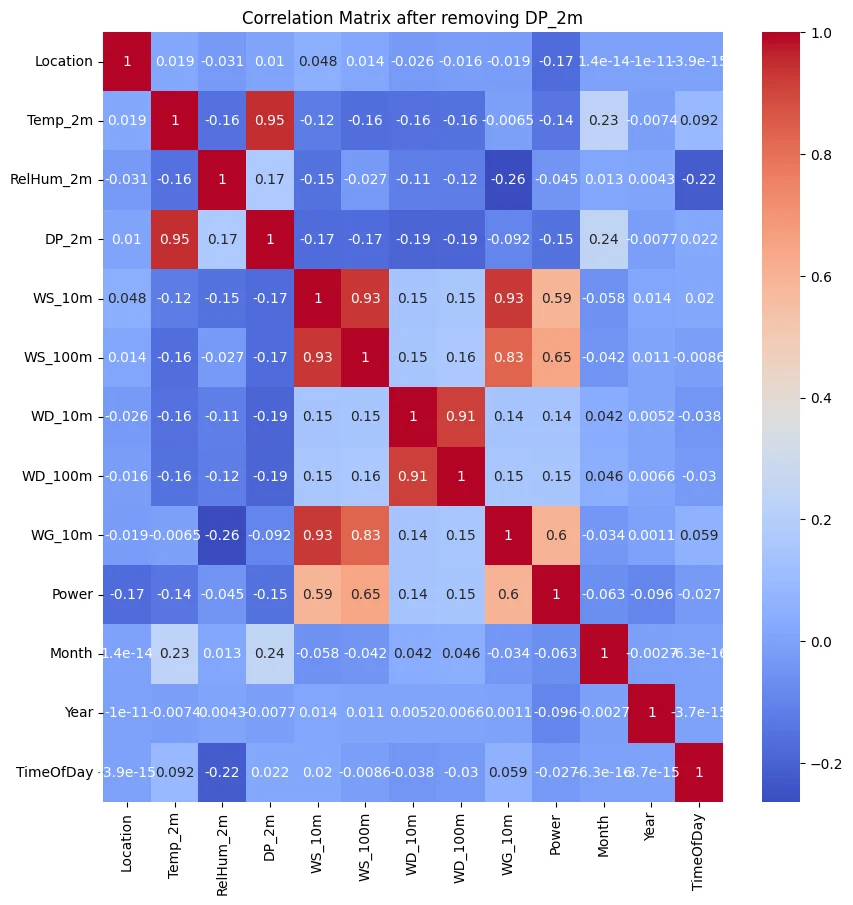
4. Exploratory Data Analysis
Plot histograms for all features to understand their distributions.
Code cell 28
train_df.hist(figsize=(12, 10))
plt.show()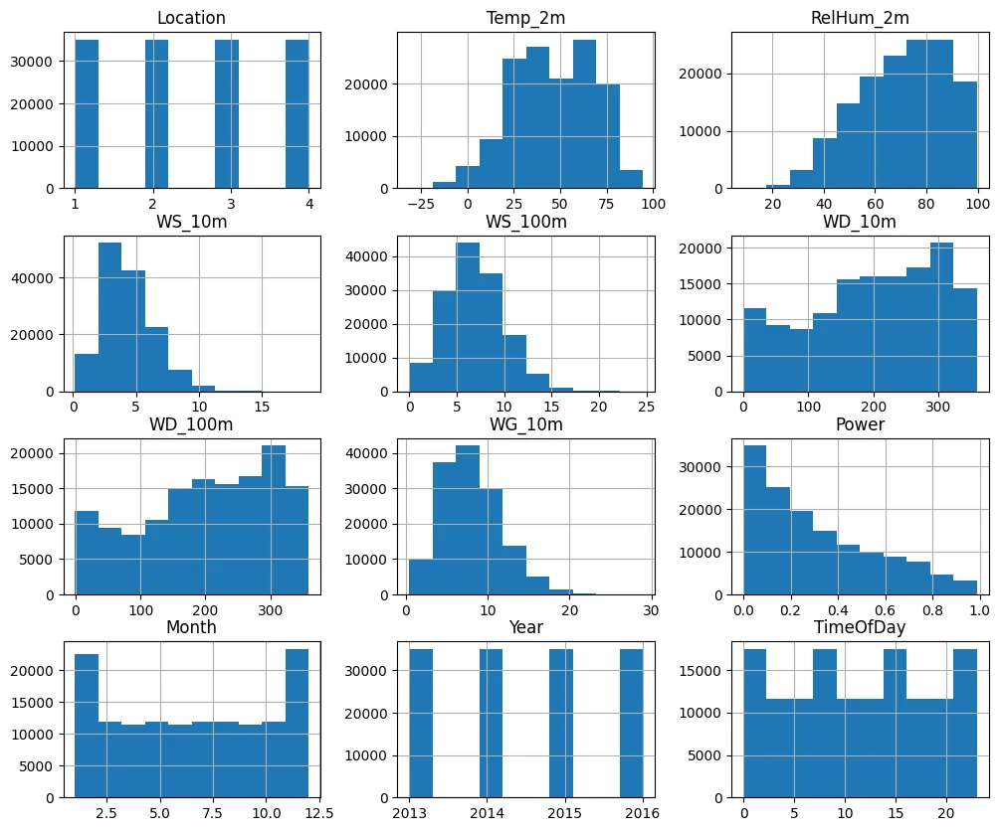
Create pair plots to visualize pairwise relationships between features and the target variable.
Code cell 30
import seaborn as sns
import matplotlib.pyplot as plt
sns.pairplot(train_df)
plt.show()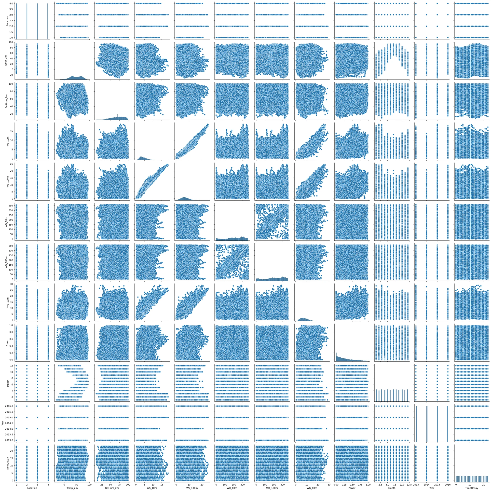
Analyze how Power varies with TimeOfDay, Month, and Year.
Code cell 32
fig, ax = plt.subplots(3, 1, figsize=(12, 8))
plt.subplot(311)
sns.lineplot(x='TimeOfDay', y='Power', data=train_df, marker='o', errorbar=None)
plt.subplot(312)
sns.lineplot(x='Month', y='Power', data=train_df, marker='o', errorbar=None)
plt.subplot(313)
sns.lineplot(x='Year', y='Power', data=train_df, marker='o', errorbar=None)
plt.tight_layout()
plt.show()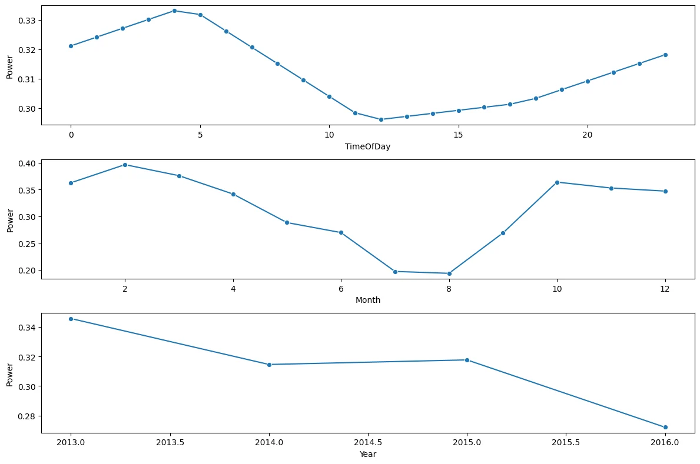
Investigate the monthly average wind speeds at 10 meters and 100 meters above the surface.
Code cell 34
monthly_avg = train_df.groupby('Month').mean()[['WS_10m', 'WS_100m']]
plt.figure(figsize=(10, 10))
plt.plot(monthly_avg.index, monthly_avg['WS_10m'], label='Average Wind Speed at 10 mtrs above surface', marker='o')
plt.plot(monthly_avg.index, monthly_avg['WS_100m'], label='Average Wind Speed at 100 mtrs above surface', marker='o')
plt.title('Monthly Average Wind Speed')
plt.xlabel('Month')
plt.ylabel('Wind Speed')
plt.legend()
plt.show()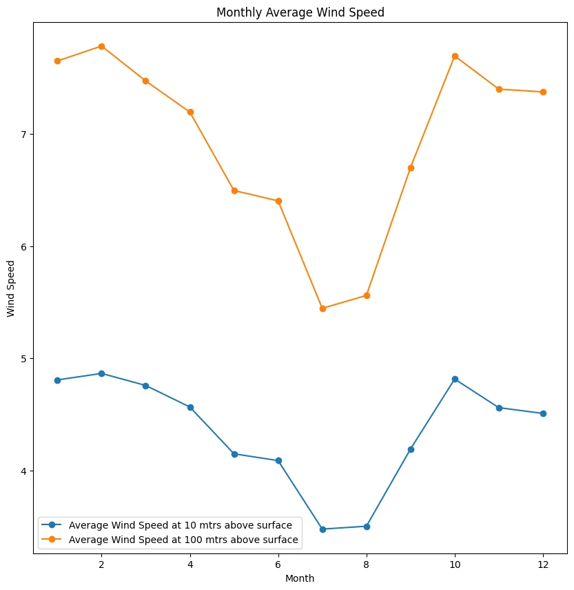
Plot the correlation coefficients of each feature with the target variable Power.
Code cell 36
correlations_with_power = corr_matrix['Power'].drop('Power')
plt.figure(figsize=(8, 5))
correlations_with_power.plot(kind='bar', color='b')
plt.title("Correlation of Variables with Power")
plt.ylabel("Correlation Coefficient")
plt.show()
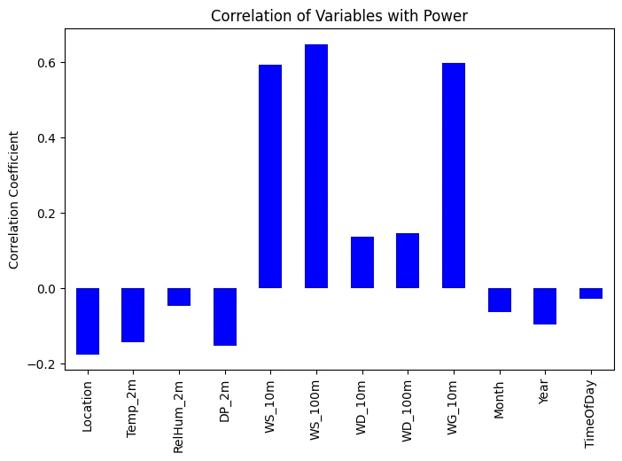
The purpose of performing convolution between different variables (such as weather, time, and location data) and the 'Power' variable is to analyze how these factors influence power generation or consumption over time. By using convolution, you are essentially combining two signals (in this case, a column from the dataset and the 'Power' variable) to identify patterns, relationships, and interactions between them.
Code cell 38
def convolve_columns(df, target_column):
convolution_results = {}
for column in df.columns:
if column != target_column:
try:
convolution_results[column] = np.convolve(df[column], df[target_column], mode='same')
except:
print(f'Error Convolving {column} with {target_column} Skipping...')
return convolution_results
convol_dict = convolve_columns(train_df, 'Power')Code cell 39
for column, convolution_result in convol_dict.items():
plt.figure(figsize=(10, 5))
plt.plot(convolution_result)
plt.title(f"Convolution of {column} with Power")
plt.xlabel("Index")
plt.ylabel("Convolution Result")
plt.show()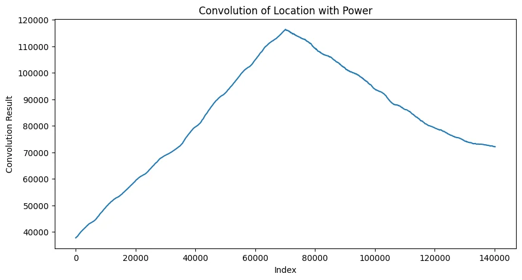
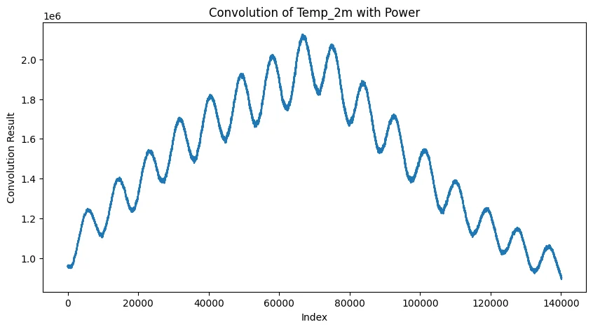
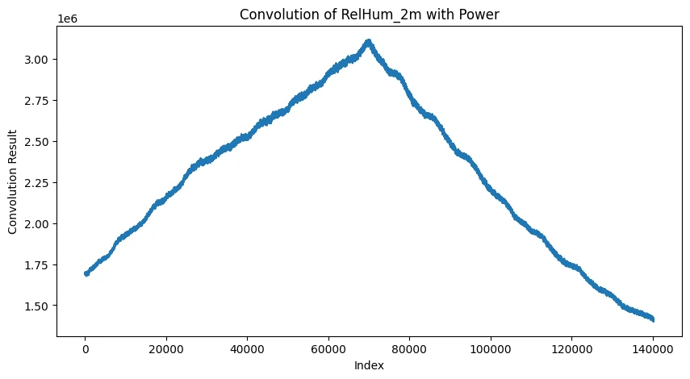
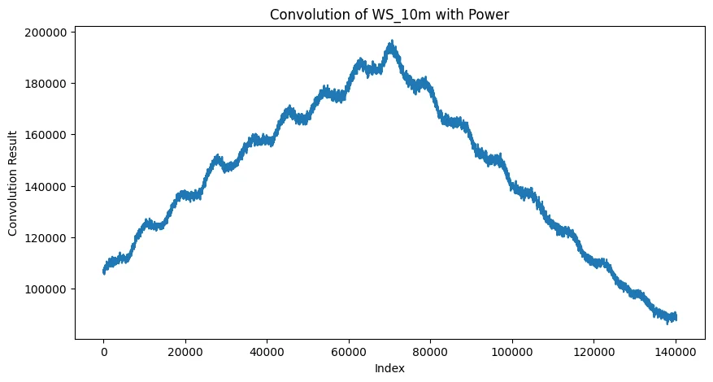
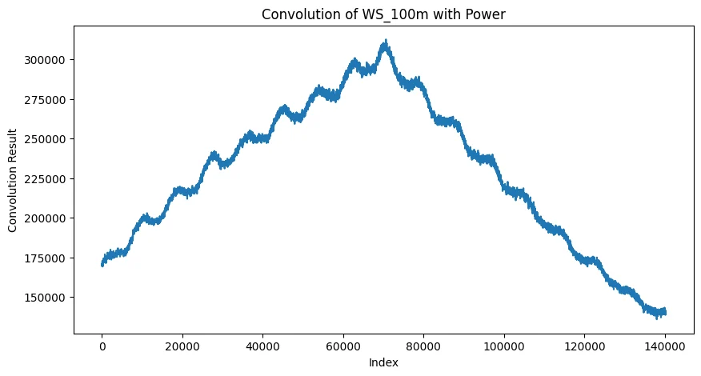
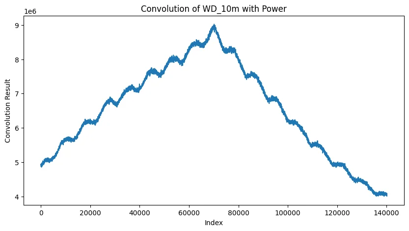
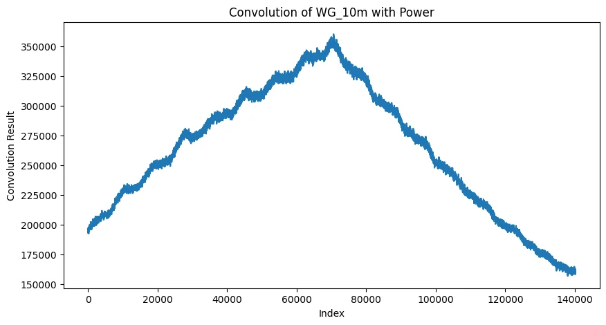
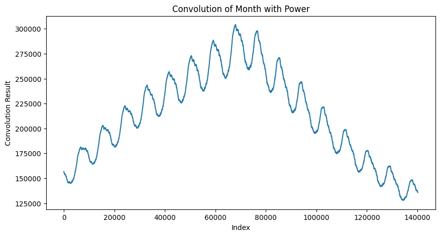
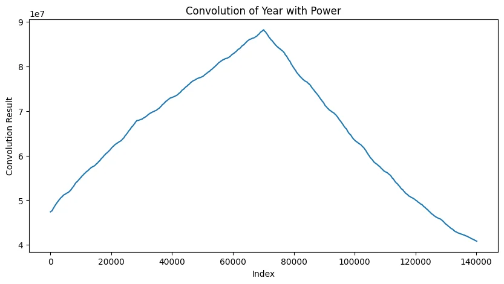
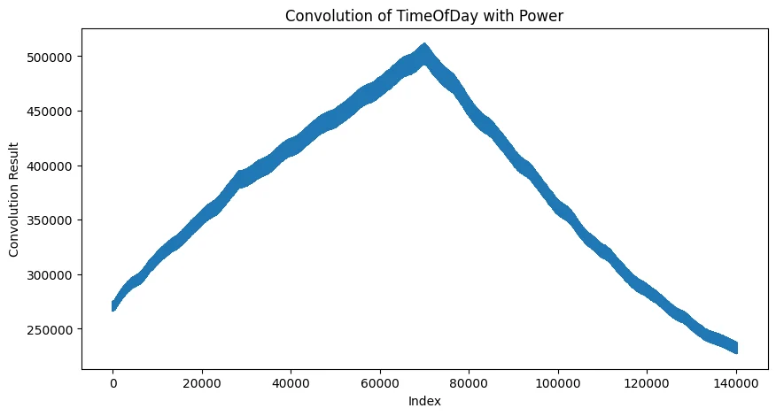
1. Convolution of Location with Power:
- Observation: The graph has a smooth rise to a peak and then gradually declines, forming a symmetric curve.
- Insight: This indicates that 'Location' has a consistent and gradually increasing influence on 'Power' over time until it peaks, after which the influence diminishes. The symmetry suggests that 'Location' affects power in a relatively balanced manner, with no sharp fluctuations. This could indicate a direct relationship, where power generation or usage increases steadily with respect to location factors like distance or geographical area.
2. Convolution of Temp_2m with Power:
- Observation: The graph shows a wave-like pattern superimposed on a gradual rise and fall.
- Insight: This suggests that temperature at 2 meters has a periodic influence on 'Power,' likely due to diurnal or seasonal temperature fluctuations. The peaks and valleys show that temperature changes have a cyclic effect on power, possibly increasing power usage during hot periods (due to air conditioning, for example) and decreasing during cooler periods. The overall rise and fall pattern indicates that temperature has a time-bound effect, peaking at a certain point and gradually diminishing.
3. Convolution of RelHum_2m with Power:
- Observation: A smooth triangular pattern, rising steadily to a peak and then declining.
- Insight: Relative humidity at 2 meters has a consistent, linear influence on 'Power,' similar to 'Location.' The steady rise indicates that as humidity increases, its impact on 'Power' becomes more significant, likely due to its influence on heating or cooling systems. The decline suggests that beyond a certain point, the effect diminishes. This relationship is smooth, meaning the impact of relative humidity changes predictably over time.
4. Convolution of WS_10m with Power:
- Observation: A jagged, step-like pattern with a rise and fall.
- Insight: Wind speed at 10 meters affects 'Power' in a more non-linear manner, with distinct jumps or fluctuations. This might be due to wind speed thresholds, where certain speeds cause significant changes in power generation (such as with wind turbines). The jagged nature reflects variability in wind speeds and their corresponding effects on power.
5. Convolution of WS_100m with Power:
- Observation: Similar to the WS_10m graph, but with larger overall values and more pronounced peaks.
- Insight: Wind speed at 100 meters has a similar but stronger influence on 'Power.' Since wind at higher altitudes tends to be stronger and more consistent, the effect is larger and more impactful. The periodic peaks and troughs indicate how changes in wind speed at different altitudes affect power generation or usage.
6. Convolution of WD_10m with Power:
- Observation: A smooth rise and fall, with no significant jaggedness.
- Insight: Wind direction at 10 meters influences 'Power' in a relatively steady manner, without the dramatic fluctuations seen with wind speed. This may suggest that wind direction has a more consistent impact on power generation, potentially guiding wind turbines or affecting air flow patterns.
7. Convolution of WD_100m with Power:
- Observation: Similar to WD_10m but with larger values.
- Insight: Wind direction at 100 meters follows the same trend as at 10 meters but with a larger influence, likely due to the more stable wind directions at higher altitudes. This steady influence might reflect directional consistency at higher altitudes, making it more reliable for energy generation.
8. Convolution of WG_10m with Power:
- Observation: A jagged pattern similar to WS_10m, but with larger fluctuations.
- Insight: Wind gusts (WG_10m) have a more sporadic influence on 'Power,' with sudden jumps that reflect their unpredictable nature. Wind gusts can cause spikes in energy generation or consumption (e.g., increased wind power generation or increased strain on power grids). The jagged nature highlights the irregularity of gusts compared to steady wind speeds.
9. Convolution of Month with Power:
- Observation: A clear, periodic wave-like pattern with regular peaks and troughs.
- Insight: The 'Month' variable shows a strong seasonal influence on 'Power,' with consistent, periodic peaks corresponding to certain months of the year. This is likely due to seasonal changes in energy consumption or production, such as higher energy usage in winter months for heating or in summer for cooling. The regularity of the pattern indicates a strong, predictable seasonal cycle.
10. Convolution of Year with Power:
- Observation: A smooth, large-scale rise and fall.
- Insight: The 'Year' variable shows a longer-term trend in its influence on 'Power.' The gradual increase followed by a peak and a decline might reflect technological advancements, population growth, or changes in energy policies or infrastructures that affect power generation or consumption over a longer time span. The smoothness suggests that these changes occur gradually over time, without sudden shifts.
Updated General Observations:
- The convolution results provide a quantitative way to analyze the relationship between variables (like temperature, wind, and time) and power.
- Peaks and troughs in the graphs highlight periods of maximum and minimum influence of each variable on power, while the overall shape of the curves reflects the nature of the relationship—whether it is smooth, periodic, or jagged.
- Weather-related variables (temperature, wind speed, humidity) exhibit more cyclic or periodic patterns, showing how natural environmental factors impact power usage or generation on a seasonal or daily basis.
- Time-related variables (month, year) display longer-term trends, with periodic or gradual effects on power, likely driven by seasonal cycles or long-term shifts in energy consumption patterns.
These insights provide a clearer understanding of how different environmental factors and time affect power usage or production, revealing both cyclic patterns and gradual trends in the data.
5. Model Training & Evaluation
Import necessary libraries for model training and evaluation.
Code cell 43
from sklearn.metrics import mean_squared_error, r2_score
from sklearn.neighbors import KNeighborsRegressor
from sklearn.tree import DecisionTreeRegressor
from sklearn.ensemble import RandomForestRegressor,AdaBoostRegressor
from sklearn.linear_model import LinearRegression, Ridge,Lasso
from sklearn.metrics import r2_score, mean_absolute_error, mean_squared_error
from sklearn.model_selection import RandomizedSearchCV
import warningsEnsure the test dataset matches the training dataset by dropping the DP_2m column.
Code cell 45
# Remove the DP_2m column due to high correlation with other features to reduce multicollinearity.
test_df.drop(columns='DP_2m', inplace=True)Prepare the feature matrix X and target vector y, and apply Min-Max scaling to numerical features.
Code cell 47
from sklearn.preprocessing import MinMaxScaler
from sklearn.compose import ColumnTransformer
X = train_df.drop(columns='Power')
y = train_df['Power']
num_features = X.select_dtypes(exclude='object').columns
cat_features = X.select_dtypes(include='object').columns
numeric_transformer = MinMaxScaler()
preprocessor = ColumnTransformer(
[
('MinMaxScaler', numeric_transformer, num_features),
]
)Code cell 48
X = preprocessor.fit_transform(X)
X.shapeText output
(140160, 11)
Define a function to evaluate models using Mean Absolute Error (MAE), Mean Squared Error (MSE), and R² Score.
Code cell 50
def evaluate_model(true, predicted):
mae = mean_absolute_error(true, predicted)
mse = mean_squared_error(true, predicted)
r2_square = r2_score(true, predicted)
return mae, mse, r2_squareSplit the data into training and testing sets to assess the model's generalization.
Code cell 52
#train and test split
from sklearn.model_selection import train_test_split
X_train, X_test, y_train, y_test = train_test_split(X,y,test_size=0.2,random_state=42)
X_train.shape, X_test.shapeText output
((112128, 11), (28032, 11))
Initialize a dictionary of regression models to evaluate.
Code cell 54
models = {
'LinearRegression': LinearRegression(),
"Lasso": Lasso(),
"Ridge": Ridge(),
"K-Neighbors Regressor": KNeighborsRegressor(),
"Decision Tree": DecisionTreeRegressor(),
"Random Forest Regressor": RandomForestRegressor(),
"AdaBoost Regressor": AdaBoostRegressor()
}Train each model and evaluate their performance on both the training and testing datasets. It is important to check both training and testing results to ensure that the model is not overfitting.
Code cell 56
model_list = []
r2_score_list = []
mae_list = []
for i in range(len(list(models))):
model = list(models.values())[i]
model.fit(X_train, y_train)
y_train_pred = model.predict(X_train)
y_test_pred = model.predict(X_test)
model_train_mae , model_train_mse, model_train_r2 = evaluate_model(y_train, y_train_pred)
model_test_mae , model_test_mse, model_test_r2 = evaluate_model(y_test, y_test_pred)
print(list(models.keys())[i])
model_list.append(list(models.keys())[i])
print('Model performance for Training set')
print(f'- Mean Absolute Error: {model_train_mae:.4f}')
print(f' - R2 Score: {model_train_r2:4f}')
print('----------------------------------')
print('Model performance for Test set')
print(f'- Mean Absolute Error: {model_test_mae:.4f}')
print(f' - R2 Score: {model_test_r2:4f}')
r2_score_list.append(model_test_r2)
mae_list.append(model_test_mae)
print('='*35)
print('\n')Compile the evaluation metrics into a DataFrame for comparison.
Code cell 58
pd.DataFrame(list(zip(model_list, r2_score_list, mae_list)),
columns=['Model Name', 'R2 Score', 'MAE']).sort_values(by=['R2 Score'],
ascending=False)| Model Name | R2 Score | MAE | |
|---|---|---|---|
| 3 | K-Neighbors Regressor | 0.824192 | 0.073055 |
| 5 | Random Forest Regressor | 0.776302 | 0.086155 |
| 4 | Decision Tree | 0.559951 | 0.112014 |
| 2 | Ridge | 0.492322 | 0.140277 |
| 0 | LinearRegression | 0.492294 | 0.140275 |
| 6 | AdaBoost Regressor | 0.475720 | 0.153964 |
| 1 | Lasso | -0.000039 | 0.212220 |
Best performing model is K-Neighbors Regressor
Train the K-Neighbors Regressor on the entire training set and evaluate its performance.
Code cell 60
K_model = KNeighborsRegressor()
K_model.fit(X_train, y_train)
y_pred = K_model.predict(X_test)
score = r2_score(y_test, y_pred)*100
print(f'R2 score: {score:.2f}%')Create a DataFrame to compare the actual and predicted values along with their differences.
Code cell 62
pred_df=pd.DataFrame({'Actual Value':y_test,'Predicted Value':y_pred,'Difference':y_test-y_pred})
pred_df| Actual Value | Predicted Value | Difference | |
|---|---|---|---|
| 24950 | 0.387496 | 0.376016 | 0.01148 |
| 17553 | 0.692396 | 0.322356 | 0.37004 |
| 19265 | 0.580596 | 0.692156 | -0.11156 |
| 32546 | 0.169296 | 0.166896 | 0.00240 |
| 67423 | 0.001196 | 0.006836 | -0.00564 |
| ... | ... | ... | ... |
| 26519 | 0.641096 | 0.817176 | -0.17608 |
| 213 | 0.909396 | 0.911676 | -0.00228 |
| 131967 | 0.100796 | 0.054536 | 0.04626 |
| 11856 | 0.589596 | 0.598836 | -0.00924 |
| 94438 | 0.225896 | 0.292056 | -0.06616 |
28032 rows × 3 columns
Calculate the mean difference between the actual and predicted values to assess the model's accuracy.
Code cell 64
mean_difference = pred_df['Difference'].mean()
print(f'Mean difference: {mean_difference:.4f}')Conclusion
In this project, we successfully developed a predictive model to forecast power output using historical environmental and temporal data over a three-year period. The primary objective was to enhance energy management efficiency by accurately predicting continuous power output values based on factors such as wind speed, temperature, pressure, and time-related variables.